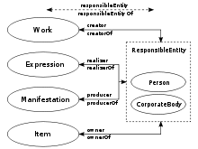
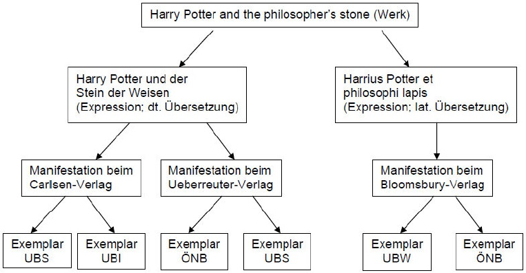
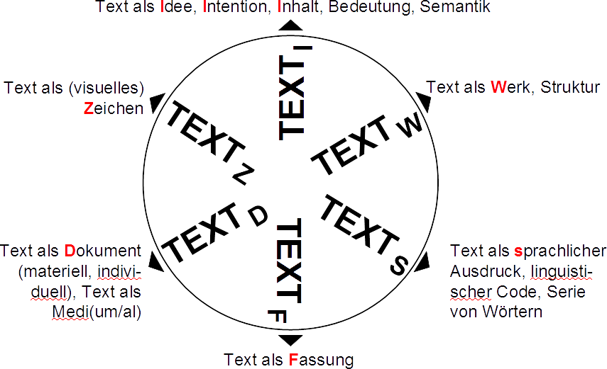
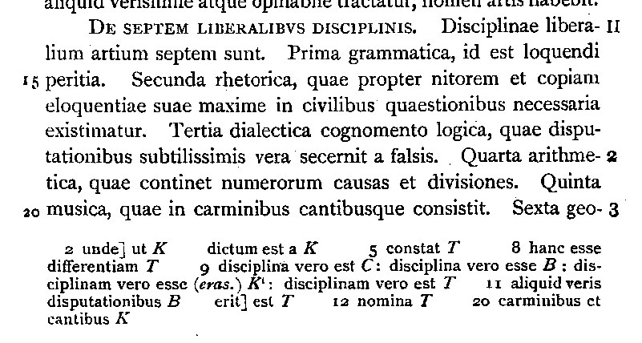
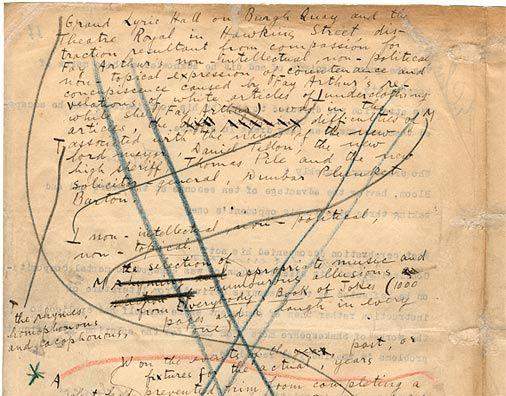
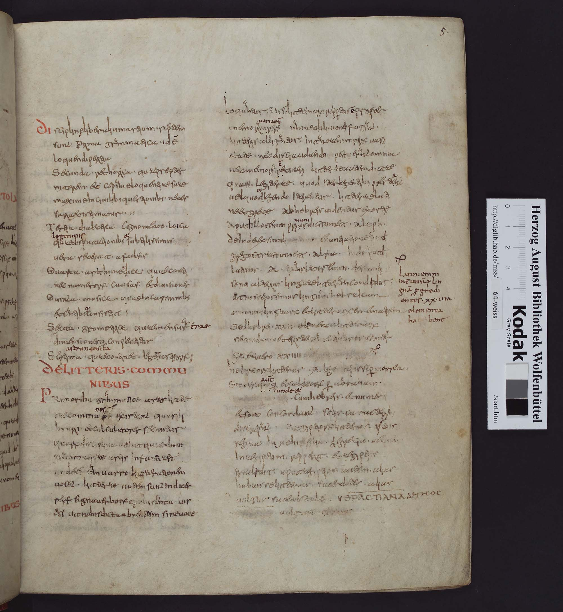
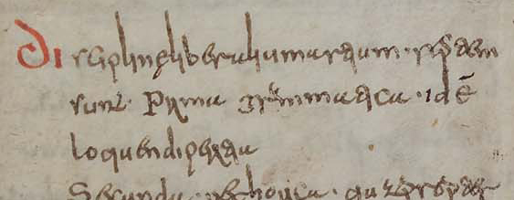

Texte digital edieren
Wie Markup und Erschließung die Texte und unsere Beschäftigung mit ihnen verändern
Torsten Schaßan, Herzog August Bibliothek
Ringvorlesung "Digitale Sprache und Diskurse" — 25.9.2018
Fahrplan
- Texte digital edieren
- Markup
- Erschließung
- Veränderungen — Herausforderungen — Entscheidungen
Texte — einige Thesen
Texte sind Zeichenketten
"How long is the coast of England?"
Graph — Allograph — Graphem — Glyph — Code
Texte haben Struktur(en)
“refining our notions both of what text is and what we are doing when we encode a text. documents are 'hierarchies of content objects'. Text, according on this view, is essentially composed of nesting objects such as chapters, sections, paragraphs, extracts, lists, and so on.”
Allen Renear, Elli Mylonas, David Durand: Refining our Notion of What Text Really Is: The Problem of Overlapping Hierarchies. 1993.
'Der' Text: Was ist das?
Functional Requirement for Bibliographical Records (FRBR)
'Der' Text: Verbindung zu Entitäten
'Der' Text: Ein Beispiel
Texte edieren
“Edition ist die erschließende Wiedergabe historischer Dokumente”
Sahle, erstmals 2000; Vom editorischen Fachwissen, 2002; https://www.i-d-e.de/themen/editorik/
Das Sahle'sche Textrad
Editionstheorie
- Historisch-kritische Ausgabe
- Überlieferungszentrierte Edition
- Édition génétique
Historisch-kritische Ausgabe
Édition génétique
Texte digital edieren
“Eine digitale Edition ist dadurch bestimmt, dass sie nicht ohne wesentliche Informations- und Funktionsverlusteverluste in eine typographische Form gebracht werden kann.”
Sahle, Digitale Editionsformen, Bd. 2, S. 149
Arbeitsschritte
- Transkribieren
- Markup einbringen
- Annotieren / Kommentieren
- Verknüpfungen herstellen
Editionsarten
- dokumentarische Edition
- Edition als "knowledge site"
Funktionalitäten (intern)
- Umschaltung von Sichten
- Anordnung von Inhalten
- Auswählen von beliebigen Inhalten
- (automatisierte) Vergleiche von Textzeugen
- Visualisierungen
- Download
Funktionalitäten (extern)
- Überprüfbarkeit
- Datenaustausch
Ein Beispiel
Markup einbringen
Die Technik: XML (eXtensible Markup Language)
- Inhalt, Struktur und Aussehen trennen
- Semantik explizit machen
- editorisches Handeln dokumentieren
Ein XML-Beispiel
<element attribut="attributwert">Elementinhalt</element>
Standardisierung: Die TEI
- Text Encoding Initiative, www.tei-c.org
- ... is a consortium which collectively develops and maintains a standard for the representation of texts in digital form
- Its chief deliverable is a set of Guidelines which specify encoding methods for machine-readable texts, chiefly in the humanities, social sciences and linguistics.
- 1987 gegründet, 06/1990 P1, 05/1994 P3, 2000 P4 der Guidelines; aktuelle Version seit 11/2007 P5.
- Seit 2001 TEI Consortium: Board of Directors, TEI Council, Workgroups, Special Interest Groups (SIGs)
Tiefes Markup: ein Editionsbeispiel
- Gegenstand: Handschrift Cod. Guelf. 64 Weiss.
- einer der wichtigsten vollständigen Textzeugen für die Enzyklopädie Isidors von Sevilla
- Palimpseste aus spätantiken Vorgängerhandschriften, u.a.
Galen: 'De alimentorum facultatibus',
einer der ältesten Texte des ‚Ambrosiaster' genannten Römerbriefkommentars,
der gotische und lateinische Text von Teilen des Römerbriefs (Ulfila)

Transkription

Disciplinę liberalium artium · septem | sunt · Prima grammatica · id est | loquendi peritia
Dokumenteigenschaften
<pb n="5r"/>
<cb n="1"/>
<lb n="1"/>Disciplinę liberalium artium · septem
<lb n="2"/>sunt · Prima grammatica · id est
<lb n="3"/>loquendi peritiaZeitnaher Eingriff
<subst>
<sic>de</sic>
<corr resp="posterior">id est</corr>
</subst>Hinzufügung
<subst>
<sic>de</sic>
<corr resp="posterior">
<add place="inline">i</add>d e<add place="inline">st</add>
</corr>
</subst>Abkürzung
<subst>
<sic>de</sic>
<corr resp="posterior">
<add place="inline">i</add>d
<choice>
<abbr>e<add place="inline">̄</add></abbr>
<expan>e<add place="inline">st</add></expan>
</choice>
</corr>
</subst>Besonderheiten der Kodierung
- Textfluss mehrdeutig (
<choice>) - 'Sinn' ergibt sich erst aus dem Zusammenspiel mit Verarbeitungsanweisungen
- statische vs. dynamische Edition → Apparat-Kodierung vs. Apparat-Generierung
Erschließung
Um Texte semantisch nutzbar zu machen, sollten (mindestens) Referenzen auf (=Erwähnung von) Entitäten ausgezeichnet und möglichst mit Normdaten verknüpft werden.
Normdaten
“Eine Normdatei ist ein Verzeichnis von normierten Begriffen zur Verwendung als Deskriptor in der Dokumentation. Eine Normdatei ist damit eine Form eines kontrollierten Vokabulars, in dem festgelegt wird, welche Ansetzung bei der Erschließung zu verwenden ist. Im Englischen werden Normdateien als 'authority files' bezeichnet.”
Wikipedia
Normdatenarten
- kontrollierte Vokabulare → z.B. Gemeinsame Normdatei (GND)
- für alle Entitäten
- neue Entitäten: Handschriften, Werke
Digitale Objekte als 'selbständige' Objekte
- Semantic Web → Linked Open Data (LOD)
Digital Autonomuous Cultural Object
(DACO) → Thaller
Veränderungen
- abstrahierende Arbeitsweise
- Mashup → Anschlussfähigkeit durch Normdaten (z.B. Beacon)
- Projektplanung → ID-Bildung, für Referenzierung
- Postmoderne Literaturtheorie
→ Leser als Autor der Edition vs. "gesichertes Wissen" - Zukunft des Annotierens → IIIF → Forschungsumgebung
How to read a million books
→ distant reading- Lizensierung → CC / OA vs. Open Content
Herausforderungen
Qualitätsmanagement
- Absprachen zwischen inhaltlichen Bearbeitern und technischen Betreuern
- inhaltliche Kontrolle → Schemata
- technische Kontrolle → kontrollierte Vokabulare
Kann es eine Standard-Verarbeitung von Editionen geben?
- Regel Nr. 1 des Kodierens: Editoren dürfen nicht auszeichnen, woran sie nicht interessiert sind!
Prozessieren, Präsentieren, Suchen, etc. - Regel Nr. 1 der Verarbeitung: Was Editoren kodiert haben, soll wohl genutzt werden!
Was wird archiviert, Langzeit-verfügbar gemacht?
- Bitstream, Aussehen, Funktionalität, Gesamtumgebung
- Edition = Software = Einheit von Inhalten, Strukturen, Oberflächen
- Formatvielfalt → "Single-Source-Prinzip"
Präsentation, Suche, Archiv, Datenaustausch
Entscheidungen
- Publikationsprozess
- Abgeschlossenheit → neue alte Publikationskultur
- Mikropublikation → IIIF, HSP
- Review-Kultur → inhaltliche und technische Begutachtung
Kritik der digitalen Vernunft
→ digitale Quellenkritik
<ENDE/>


- mail: schassan@hab.de
- twitter: @schassan
- www: www.hab.de
- orcid: 0000-0002-8902-4775
- github: schassan